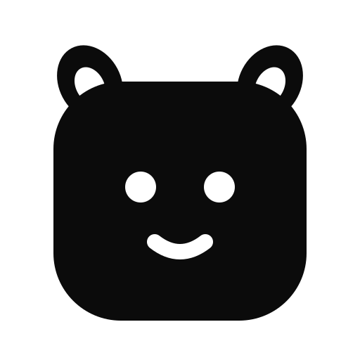

A 56 mm e-ink companion with a living face, a speaker and a 32 GB memory card. Press its button, ask a question: the iPhone app asks Claude and Element 0 shows and speaks the answer.
Un compagnon e-ink de 56 mm avec un visage vivant, un haut-parleur et une carte mémoire de 32 Go. On appuie sur son bouton, on pose une question : l'app iPhone interroge Claude et Element 0 affiche et dit la réponse.
The puck in 3D in your browser. Without a puck it runs as a simulation; with one, it connects over Bluetooth (Chrome or Edge).
Le puck en 3D dans le navigateur. Sans puck, c'est une simulation ; avec un puck, connexion Bluetooth (Chrome ou Edge).
Open the web appOuvrir l'app webFor the Waveshare ESP32-C6-ePaper-1.54 board. One full-flash image: write it at address 0x0 with esptool or the ESP web flasher. From 1.2 on, an Element updates itself over Wi-Fi.
Pour la carte Waveshare ESP32-C6-ePaper-1.54. Une image complète de la mémoire : à écrire à l'adresse 0x0 avec esptool ou l'outil web ESP. Depuis la 1.2, un Element se met à jour tout seul en Wi-Fi.
Download (1.3 MB)Télécharger (1,3 Mo)SHA-256 cbbfb6be915311a4d6fc4348ad9bf47a8fd3ae97b532cc07daa434cd6e2df374
109 moods, emotions and body sensations, 168 × 168 one-bit images, in two catalogs (see catalog 2). Unzip to the root of the card so it has a faces folder, or copy them over USB with copy_faces_usb.py.
109 humeurs, émotions et sensations, images 168 × 168 en noir et blanc, en deux catalogues (voir le catalogue 2). À décompresser à la racine de la carte (dossier faces).
SHA-256 05d9d541ee0c26f40d71a4c61b3e6cd2a059bbdeacb60216904558106fb2d189
Pairing, talk button, Claude answers, natural voice (Kokoro, on the phone), settings and daily logs. Not on the App Store yet: TestFlight beta first.
Appairage, bouton pour parler, réponses de Claude, voix naturelle (Kokoro, sur le téléphone), réglages et journal du jour. Pas encore sur l'App Store : bêta TestFlight d'abord.
Ask for the betaDemander la bêtaEvery command and state field, for anyone who wants to build their own app for the puck.
Toutes les commandes et l'état du puck, pour créer sa propre app.
Read (Markdown)Lire (Markdown)Lower button: talk. Upper button: menu (Element, pair a phone, info).
It turns speech into text on the phone, streams the question to Claude and streams the answer back: text on the screen, voice sentence by sentence on the puck's speaker.
Claude tags each answer with a mood and the face follows: 161 faces built in, 3,196 more on the card, and a cat that lives on the whole screen.
Your Claude key stays in the iPhone's Keychain; it is never in the app or on the puck. Conversations are logged only on your phone and your card.
ESP32-C6, 1.54-inch e-paper (200 × 200), ES8311 audio codec and speaker, microSD, battery. Element IDs: 0, then A00 to Z99.
En bas : parler. En haut : menu (Element, appairer un téléphone, infos).
Il transcrit la voix sur le téléphone, envoie la question à Claude en continu et renvoie la réponse : le texte à l'écran, la voix phrase par phrase dans le haut-parleur du puck.
Claude donne une humeur à chaque réponse et le visage suit : 161 visages intégrés, 3 196 de plus sur la carte, et un chat qui vit sur tout l’écran.
La clé Claude reste dans le trousseau de l'iPhone, jamais dans l'app ni sur le puck. Les conversations sont enregistrées seulement sur votre téléphone et votre carte.
ESP32-C6, écran e-paper 1,54 pouce (200 × 200), codec audio ES8311 et haut-parleur, microSD, batterie. Identifiants : 0, puis A00 à Z99.